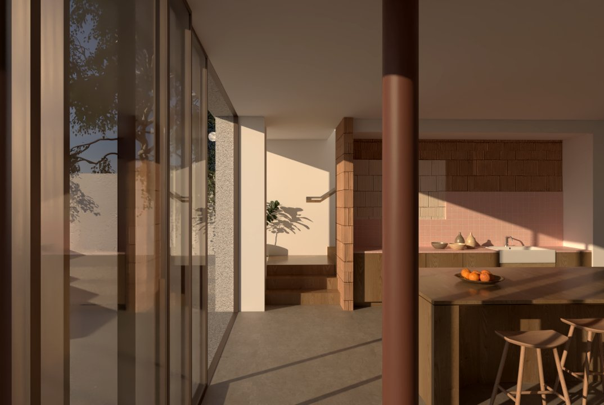
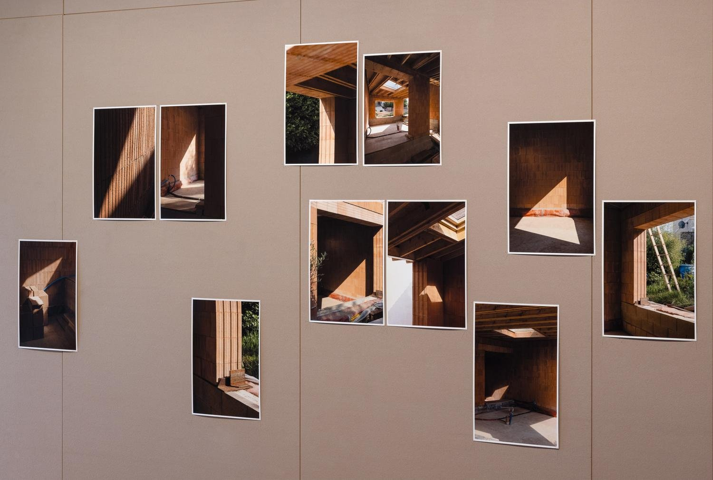
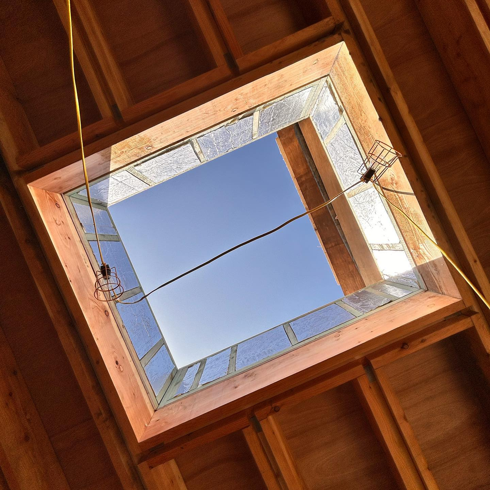
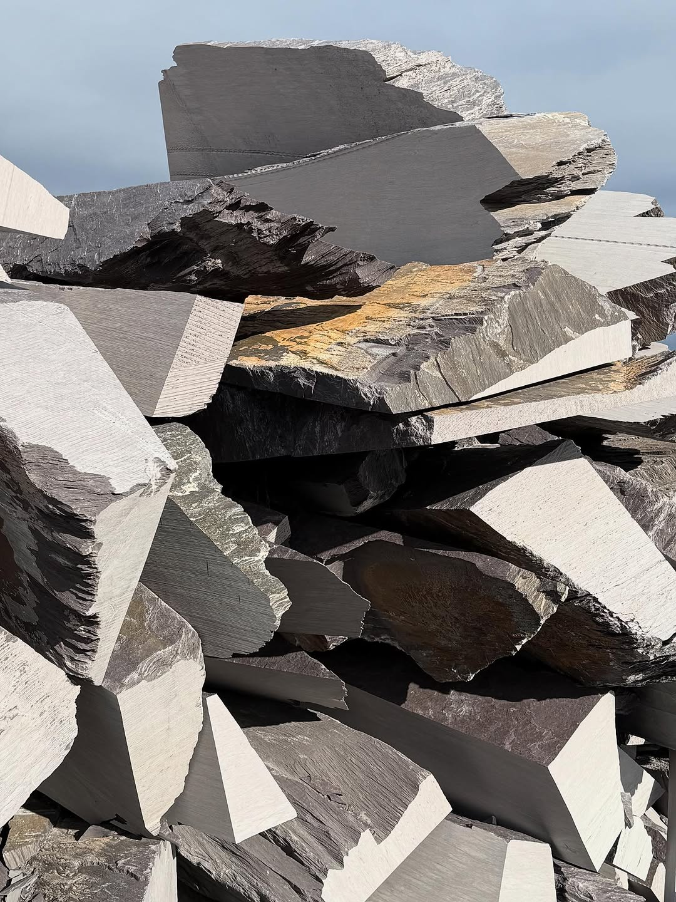
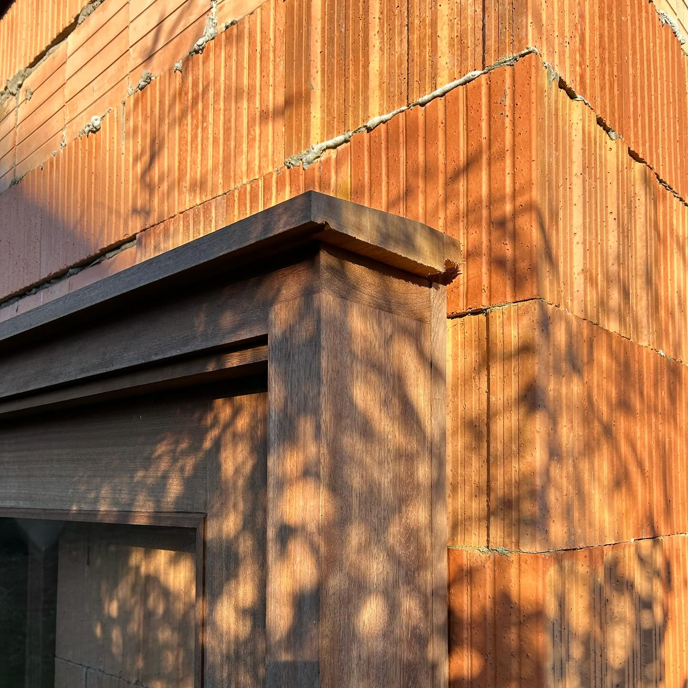
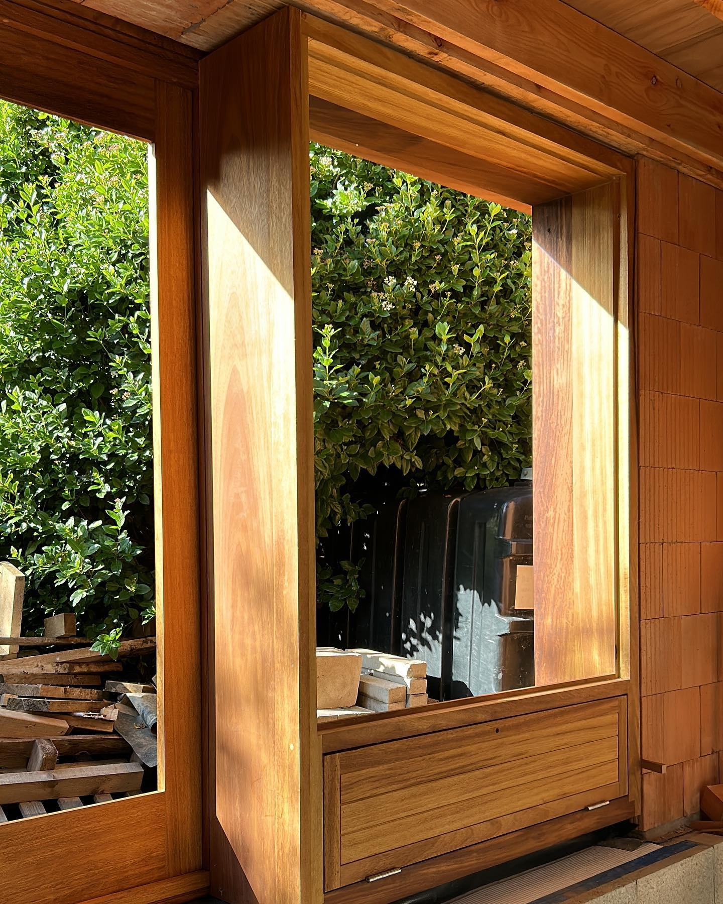
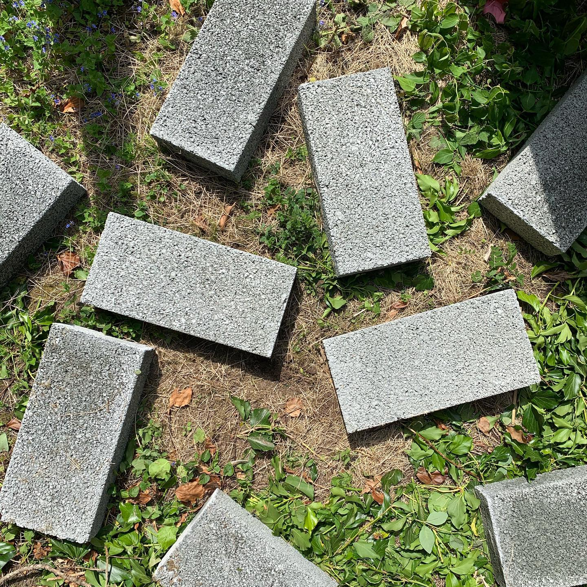
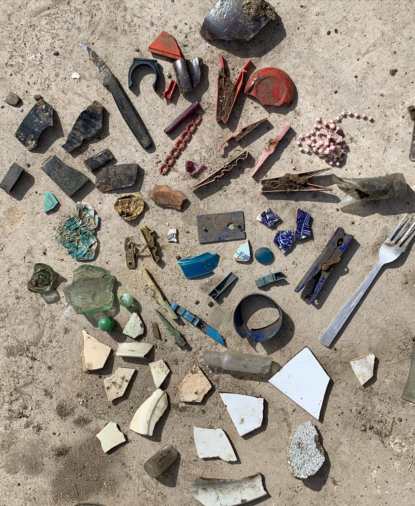
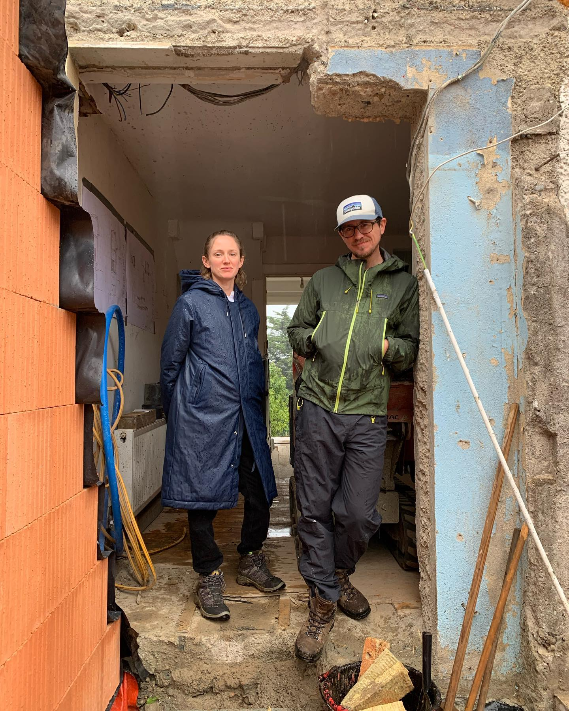
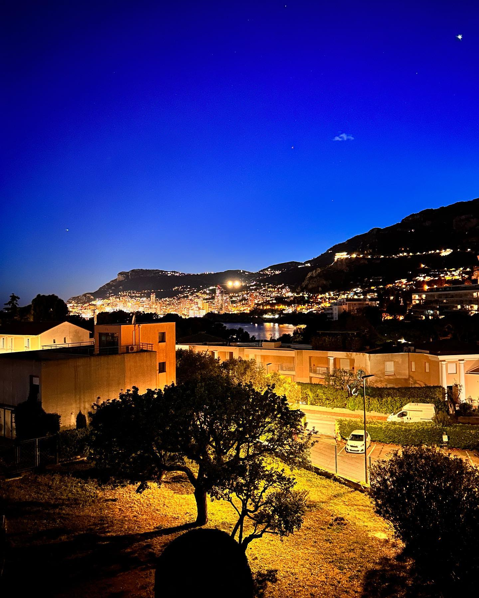

Working within the traditional boundaries of architecture — from first principles, and from the ground.
ben mullen architects works across new buildings, conservation and exhibition, from initial design through to self-build and construction management. Each project is developed with sensitivity to site, new material cultures and the histories of construction — treating environmental concern not as a constraint, but as the starting point of the design.
Selected buildings, exhibitions and conservation work follow below. For new commissions and collaborations, please get in touch.

An architectural practice based in Wicklow, Ireland, working within the traditional boundaries of architecture to address environmental concerns as the primary spatial, ethical and aesthetic problems of our time.
Projects are developed from first principles, with sensitivity to site, new material cultures and the histories of construction. The practice is accredited in conservation at grade 3.
Ben Mullen — B.Arch, BA Fine Art, MRIAI — is a graduate of SAUL, the School of Architecture at the University of Limerick, and the National College of Art & Design. In 2025 he received the RIAI Emerging Architect Award, and in 2023 the inaugural Eileen Gray E-1027 Research Fellowship at the CCI in Paris.
Since 2016 he has been a Design Fellow at the School of Architecture, Planning & Environmental Policy in UCD, and a design critic to schools of architecture across Ireland and the UK.
Awarded to Ben Mullen by the Royal Institute of the Architects of Ireland.
The RIAI is the professional and regulatory body for architects in Ireland, founded in 1839. Its Emerging Architect Award recognises an architect who has made a significant contribution to architecture in the early years of independent practice.
Kilmantin Road received an AAI Award in 2025.
Run by the Architectural Association of Ireland — founded in 1896 and Ireland's longest-established forum for architecture — the AAI Awards are an annual, independently juried celebration of design excellence across built and unbuilt work by architects practising in Ireland.
The Fall was commissioned as the Art of Architecture Pavilion for 2025.
The Royal Hibernian Academy (RHA), founded in 1823, is one of Ireland's oldest art institutions. Each year its Annual Exhibition includes the Art of Architecture Pavilion — a commissioned, full-scale architectural installation shown among the exhibited work in Dublin.
Ben Mullen held the inaugural fellowship in 2023.
Hosted at the Centre Culturel Irlandais (CCI) in Paris, the fellowship supports architectural research connected to Eileen Gray's modernist villa E-1027 on the Côte d'Azur — a landmark of twentieth-century architecture and design.







